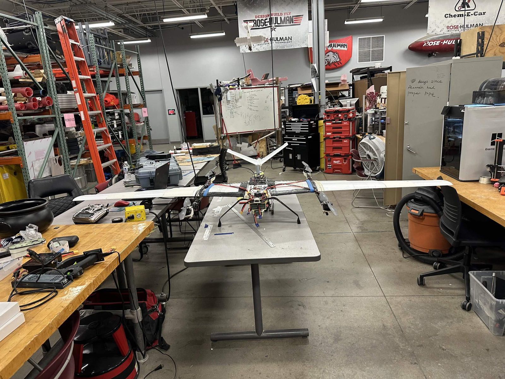
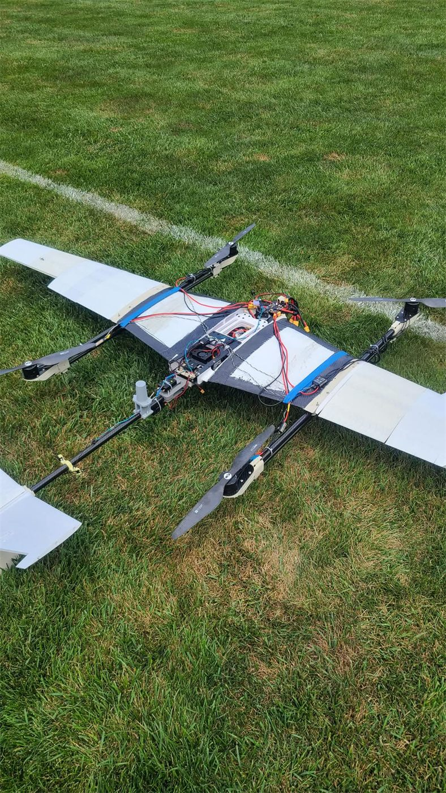

Modes and missions
ArduPilot provides the assisted VTOL modes, autonomous waypoint missions, guided navigation, return-to-launch behavior, and landing logic.

Vehicle design documentation
MeadowHawk has to do more than fly. Its structure, power system, flight controller, mission computer, camera, payload bay, and ground station all have to work together and still leave the safety pilot a reliable way to take over.
A conventional fixed-wing aircraft needs room to launch and recover. A multirotor can take off almost anywhere, but it uses more energy in forward flight. MeadowHawk combines the two: four lift motors handle vertical flight, and a rear pusher is intended to carry the aircraft through fixed-wing cruise.
The Pixhawk 6X handles stabilization and navigation. A Jetson Orin NX runs the higher-level Python mission and vision software. The aircraft also carries separate pilot and ground-station links, a downward-facing camera, and a payload bay near the center of gravity.

The wing carries MeadowHawk in cruise, while the carbon lift structure supports four motors for vertical flight. The fuselage holds the batteries, flight electronics, camera, and payload close to the aircraft centerline.


The lift and cruise motors do different jobs. The lift system needs controllable thrust at low airspeed; the rear pusher is sized around cruise thrust, current draw, and propeller pitch speed.
The DJI motors were an interim proof-flight set. The TDR selected T-Motor MN501-S KV360 motors and P18 x 6.1 propellers for later testing, but that combination had not yet been flight-tested.
The Pixhawk 6X runs ArduPlane's QuadPlane firmware. It stabilizes the aircraft, follows waypoints, and manages VTOL modes and return behavior. The architecture keeps those safety-critical flight functions on the Pixhawk instead of the Jetson.
ArduPilot provides the assisted VTOL modes, autonomous waypoint missions, guided navigation, return-to-launch behavior, and landing logic.
GNSS supplies position data, while return modes and the safety pilot's independent manual-control link provide recovery options. Airspeed and geofence settings are checked for each flight configuration.
We use ArduPilot SITL, Gazebo, Mission Planner, short flight tests, and log review before expanding the flight envelope.

The Jetson Orin NX runs the team's Python software. It reads vehicle telemetry through PyMAVLink, tracks mission state, captures camera frames, and runs the detection pipeline. It does not replace the Pixhawk's stabilization or failsafe functions.

The safety pilot and ground-station operator have different jobs, so MeadowHawk does not depend on one link for every function.
ExpressLRS carries the pilot's manual-control link and provides a direct path to take over from the autonomous mission.
A separate 915 MHz telemetry radio carries MAVLink data between the aircraft and the ground station.
The ground-station operator uses Mission Planner to build missions, monitor position and flight state, and review logs after testing.

The payload bay is designed to hold two independently commanded relief objects near the center of gravity. Keeping the load near that point limits trim changes as the objects are carried and released.
New work starts in calculations, simulation, or bench testing before it reaches a flight vehicle. We keep MEP results separate from MeadowHawk results, review telemetry after each flight, and recheck the configuration before moving to the next step. Manual takeover, return modes, geofencing, and preflight checks are part of that process.
See the testing record